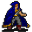

Sly Seraphina¶{ .sprite }
| Type | NPC (can be spoken to; cannot be attacked) |
| Role | Shopkeeper |
| Found in | Prim, Vilegard, Brimhaven, lake_shore_road_9, crackshot_hideout3, crackshot_hideout4 |
| Entries in game data | 7 |
| Introduced | v0.8.13 |
7 entries in the game data
The game's data files define 7 separate characters named Sly Seraphina. Andor's Trail stores a character as a new entry whenever it needs different behaviour, for example a different conversation at a later stage of a quest, a different location, or different combat statistics. Some entries represent the same person at different points in the story; others are different people who share a generic name. Here the entries differ in: conversation, location, loot or shop stock, movement. This page combines them; each entry is described in its own section below.
| Entry | Type | Location | Role |
|---|---|---|---|
tt_seraphina |
NPC | Brimhaven: waterway6, Brimhaven: waytobrimhaven3 (+5 more) | – |
thief_seraphina |
NPC | lake_shore_road_9 | shopkeeper |
tt_seraphina2 |
NPC | crackshot_hideout3 | – |
tt_seraphina3 |
NPC | crackshot_hideout4 | – |
tt_seraphina3b |
NPC | crackshot_hideout4 | – |
tt_seraphina4 |
NPC | crackshot_hideout4 | – |
tt_seraphina5 |
NPC | crackshot_hideout4 | – |
Brimhaven, Waterway6 and 6 more (tt_seraphina)¶
Entry ID: tt_seraphina · Type: NPC
Location: Brimhaven: waterway6, Brimhaven: waytobrimhaven3, Loneford: waytobrimhaven1, Prim: blackwater_mountain12, Stoutford: wild21, Vilegard: vilegard_s (+1 more)
Locations¶
| Map | Region | Up to | Notes |
|---|---|---|---|
| blackwater_mountain12 | Prim | 1 | Appears later, during a quest |
| sullengard3 | – | 1 | Appears later, during a quest |
| vilegard_s | Vilegard | 1 | Appears later, during a quest |
| waterway6 | Brimhaven | 1 | Appears later, during a quest |
| waytobrimhaven1 | Loneford | 1 | Appears later, during a quest |
| waytobrimhaven3 | Brimhaven | 1 | Appears later, during a quest |
| wild21 | Stoutford | 1 | Appears later, during a quest |
Quests¶
- Search for Andor: stages 130, 999
- Troubling times: stages 180, 190, 192, 195
Dialogue simulator¶
Set the quest stages, items and other conditions that apply to your game, then start the conversation with Sly Seraphina. The simulator applies the game's own rules: it performs the same silent checks, offers only the options that would be shown in the game, and applies their effects (quest stages, items handed over, rewards) as the conversation proceeds.
Rules verified against v0.8.18 game code (ConversationController.java) and dialogue data.
Dialogue (15 lines)
What the dialogue says, exactly as in the game files. Lines are listed once; links jump to the line a choice leads to.
tt_sly_200 (silent check: the first matching branch below is taken)
- branch 1 (if NOT killed 5× Seraphina's bodyguard) → tt_sly_202
- branch 2 → tt_sly_210
tt_sly_202 Sly Seraphina: “Watch out, kid. Behind you!”
tt_sly_210 Sly Seraphina: “OK, you're tough, even if not smart, kid.” — effects: sets stage 180 of Troubling times, removes monsters from sullengard3, removes monsters from wild21, removes monsters from waytobrimhaven1, removes monsters from blackwater_mountain12, removes monsters from waterway6, removes monsters from vilegard_s
- “Thank you?” → tt_sly_211
tt_sly_211 Sly Seraphina: “Smart enough to find me, and tough enough to beat my friends. You convinced me that we can do it.”
- Next → tt_sly_212
tt_sly_212 Sly Seraphina: “As we discussed, Luthor's Ring can be found in the secret room which Crackshot tried to open with Luthor's key from Umar.”
- Next → tt_sly_213
tt_sly_213 Sly Seraphina: “So you have to go and ask Umar for Luthor's key.” — effects: sets stage 192 of Troubling times
- “No problem.” → tt_sly_214
tt_sly_214 Sly Seraphina: “However, that door can only be opened if you also wear Luthor's gloves, which breaks the spell on it.”
- “And the evil you mentioned are monsters, nothing more?” → tt_sly_216
tt_sly_216 Sly Seraphina: “In fact, I didn't take the time to look at them more closely. But they seemed terrible and deadly to me.”
- Next → tt_sly_220
tt_sly_220 Sly Seraphina: “When the door opens, and these strong monsters escape into the open, they will attack Dhayavar, which we must avoid at all costs.”
- Next → tt_sly_222
tt_sly_222 Sly Seraphina: “Which reminds me: Another kid was looking for information to open it.”
- “That kid, did he look just like me, but older?” → tt_sly_230
tt_sly_230 (silent check: the first matching branch below is taken) — effects: clears stage 999 of Search for Andor
- branch 1 → tt_sly_240
tt_sly_240 Sly Seraphina: “Come to think of it, he did.” — effects: sets stage 130 of Search for Andor, sets stage 999 of Search for Andor
- “[to self] What was Andor trying to do now?” → tt_sly_250
tt_sly_250 Sly Seraphina: “Looking at your strength, kid, you may just be able to beat those monsters. We might give it a try.”
- “Thanks again.” (if reached stage 38 of sullengard_nondisplay (hidden flag); NOT reached stage 190 of Troubling times) → tt_sly_252
- “Thanks again.” (if NOT reached stage 38 of sullengard_nondisplay (hidden flag)) → tt_sly_254
tt_sly_252 Sly Seraphina: “By the way, here's your money back. 1,000 gold.” — effects: sets stage 190 of Troubling times, gives 1000× Gold coins
- “Hmm, OK.” → tt_sly_254
tt_sly_254 Sly Seraphina: “Meet me at the door to the secret room, and bring Luthor's key. Together with Luthor's gloves the door will open.” — effects: sets stage 195 of Troubling times, spawns monsters on crackshot_hideout3, removes monsters from sullengard3, removes monsters from sullengard3, removes monsters from wild21, removes monsters from wild21, removes monsters from waytobrimhaven1, removes monsters from waytobrimhaven1, removes monsters from blackwater_mountain12, removes monsters from blackwater_mountain12, removes monsters from waterway6, removes monsters from waterway6, removes monsters from vilegard_s, removes monsters from vilegard_s
- “OK.” → NPC leaves
Version history¶
| Version | Change |
|---|---|
| v0.8.13 | Added Dialogue: 15 lines added |
| v0.8.18 | Dialogue: 1 line changed · text: “By the way, here's your money back. 1000 gold.” → “By the way, here's your money back. {1000} gold.” |
Verified against v0.8.18 and every earlier release back to v0.7.0 (game data compared release by release).
Technical information (tt_seraphina)
| Entry ID | tt_seraphina |
| Spawn group | tt_seraphina |
| Loot table | – |
| Conversation | tt_sly_200 |
| Faction | – |
| Movement | – |
| Icon | monsters_tometik7:38 |
| Defined in | res/raw/monsterlist_troubling_times.json |
Raw data:
{
"id": "tt_seraphina",
"name": "Sly Seraphina",
"iconID": "monsters_tometik7:38",
"monsterClass": "humanoid",
"spawnGroup": "tt_seraphina",
"phraseID": "tt_sly_200"
}
Lake shore road 9 (thief_seraphina)¶
Entry ID: thief_seraphina · Type: NPC · Role: Shopkeeper
Location: lake_shore_road_9
Shop stock¶
| Item | Chance | Qty |
|---|---|---|
| Armored helmet | 100% | 1 |
Quests¶
- Troubling times: stages 110, 130, 140, 320
- sullengard_nondisplay (hidden flag): stage 38
Dialogue simulator¶
Set the quest stages, items and other conditions that apply to your game, then start the conversation with Sly Seraphina. The simulator applies the game's own rules: it performs the same silent checks, offers only the options that would be shown in the game, and applies their effects (quest stages, items handed over, rewards) as the conversation proceeds.
Rules verified against v0.8.18 game code (ConversationController.java) and dialogue data.
Dialogue (59 lines)
What the dialogue says, exactly as in the game files. Lines are listed once; links jump to the line a choice leads to.
thief_seraphina_selector (silent check: the first matching branch below is taken)
- Next (if NOT reached stage 36 of sullengard_nondisplay (hidden flag); NOT reached stage 75 of Another ruthless Crackshot) → thief_seraphina_script_10
- Next (if NOT reached stage 75 of Another ruthless Crackshot; NOT reached stage 38 of sullengard_nondisplay (hidden flag)) → thief_seraphina_10
- Next (if reached stage 75 of Another ruthless Crackshot) → thief_seraphina_bridge_fixed
- Next (if reached stage 38 of sullengard_nondisplay (hidden flag)) → thief_seraphina_80
thief_seraphina_script_10 Sly Seraphina: “Hey, kid! Just where do you think you're going?”
- “Across the bridge, of course. After all, I can't swim.” → thief_seraphina_script_20
- “Nowhere...I guess.” → conversation ends
thief_seraphina_10 Sly Seraphina: “Let me guess, you're wondering if I know how to cross the river?”
- “Well, do you?” → thief_seraphina_20
thief_seraphina_bridge_fixed Sly Seraphina: “Please move along. There's nothing to see here.”
- “I've been wondering, do you have anything to sell?” (if NOT reached stage 3 of Sutdove_nondisplay (hidden flag); NOT carry 1× Armored helmet; NOT wearing Armored helmet) → thief_seraphina_helmet_1
- “Yes, ma'am.” → conversation ends
- “The Guild needs you. Umar ...” (if reached stage 100 of Troubling times; NOT reached stage 140 of Troubling times) → tt_sly_10
- “Hi Seraphina, you were away so quickly after you gave me Luthor's ring.” (if reached stage 270 of Troubling times; NOT reached stage 320 of Troubling times) → tt_sly_300
thief_seraphina_80 Sly Seraphina: “Why are you looking at me like that?”
- “I want my gold back. You thief!” → thief_seraphina_81
thief_seraphina_script_20 Sly Seraphina: “The bridge is broken. You're going nowhere.”
thief_seraphina_20 Sly Seraphina: “Well, as a matter of fact, I do. I have a board right here under the bridge that you can place over the hole. But it's going to cost you 1,000 gold.”
- “Wow! All you thieves are alike. Here, take it.” (if pay 1,000 gold) → thief_seraphina_30
thief_seraphina_helmet_1 Sly Seraphina: “What, do I look like a merchant?”
- “Well...” → thief_seraphina_helmet_2
tt_sly_10 Sly Seraphina: “Umar? Who's that?”
- “Oh well: I am nothing. You don't see me.” → tt_sly_12
tt_sly_300 Sly Seraphina: “What did you expect?”
- “Well ...” → tt_sly_310
thief_seraphina_81 Sly Seraphina: “Do I know you?”
- “Oh, you want to play dumb? Umar will hear about this!” → conversation ends
- “No time to joke - the Guild needs you. Umar ...” (if reached stage 100 of Troubling times; NOT reached stage 140 of Troubling times) → tt_sly_10
thief_seraphina_30 Sly Seraphina: “Great! Now, let me see. Where is that board?”
- Next → thief_seraphina_40
thief_seraphina_helmet_2 Sly Seraphina: “Well, I am not. But today is your lucky day.”
- “It is?” → thief_seraphina_helmet_3
tt_sly_12 Sly Seraphina: “That's better, little child. Get used to it.”
tt_sly_310 Sly Seraphina: “OK, I admit that you are quite good.”
- “Thank you!” → tt_sly_320
thief_seraphina_40 Dummy NPC: “Seraphina bends down to look under the bridge.”
- Next → thief_seraphina_50
thief_seraphina_helmet_3 Sly Seraphina: “Yes. You see, I recently "acquired" this "beauty" from a dumb guy trying to cross the bridge before you fixed it. Do you want to take a look”
- “Yes!” → shop opens
- “No, thanks. I'm leaving.” → conversation ends
tt_sly_20 (silent check: the first matching branch below is taken)
- branch 1 (if reached stage 120 of Troubling times) → tt_sly_50
- branch 2 (if reached stage 110 of Troubling times) → tt_sly_40
- branch 3 → tt_sly_30
tt_sly_14 Sly Seraphina: “Then stop stomping on the ground.”
- Next → tt_sly_20
tt_sly_320 Sly Seraphina: “I would actually do a job with you again if the opportunity came up.”
- “Yes, that would be nice.” → tt_sly_330
thief_seraphina_50 Sly Seraphina: “Um, it's not here.”
- “What do you mean "it's not here"? Where is it?” → thief_seraphina_60
tt_sly_50 Sly Seraphina: “Now what does Umar want?”
- “Listen ... [whispering the password] Now you believe me? We have to remove the Striking Spectacle ...” → tt_sly_52
tt_sly_40 Sly Seraphina: “Now what does Umar want?”
- “We have to remove the Striking Spectacle Shadow spell from ...” → tt_sly_42
tt_sly_30 Sly Seraphina: “Now what does Umar want?”
- “We have to remove the Striking Spectacle Shadow spell from members of the Thieves' Guild. Or the Guild may as well…” → tt_sly_32
tt_sly_330 Sly Seraphina: “And now buzz off, kid. ... $playername.” — effects: sets stage 320 of Troubling times
- “[Grinning] See you.” → tt_sly_350
thief_seraphina_60 Sly Seraphina: “It must have drifted down river. Sorry!”
- “"Sorry"? I want my gold back.” → thief_seraphina_70
tt_sly_52 Sly Seraphina: “You are still repeating yourself.”
- “Stop that game now and answer me!” → tt_sly_54
tt_sly_42 Sly Seraphina: “Yes, you've said already. Stop repeating yourself.”
- “Sure. We need Luthor's ring, and ...” → tt_sly_44
tt_sly_32 Sly Seraphina: “And what do I have to do with it?”
- “We need Luthor's ring, and you know ...” → tt_sly_34
tt_sly_350 Sly Seraphina: “See you.”
thief_seraphina_70 Sly Seraphina: “Maybe next time you come by I'll have the board?” — effects: sets stage 38 of sullengard_nondisplay (hidden flag)
tt_sly_54 Sly Seraphina: “All right. Umar wants me to give you Luthor's ring? And unleash evil on all of Dhayavar?”
- “Why would that ring unleash evil?” → tt_sly_56
tt_sly_44 Sly Seraphina: “Forget it, kid. Buzz off!”
- “Sure. We need Luthor's ring, and ...” → tt_sly_46
tt_sly_34 Sly Seraphina: “Likely story, kid. Buzz off!” — effects: sets stage 110 of Troubling times
tt_sly_56 Sly Seraphina: “Not the ring itself. But the cave does, if the door is opened.”
- “That makes even less sense. Explain.” → tt_sly_58
tt_sly_46 Sly Seraphina: “And please, stop repeating yourself.”
tt_sly_58 Sly Seraphina: “Say 'please'.”
- “No.” (if random chance (50%)) → tt_sly_58
- “Never.” (if random chance (33%)) → tt_sly_58
- “Forget it.” (if random chance (33%)) → tt_sly_58
- “[With rolling eyes] OK - please.” → tt_sly_60
tt_sly_60 Sly Seraphina: “You might remember Crackshot's hideout, do you?”
- “Of course. Behind the many ugly larvals.” → tt_sly_62
tt_sly_62 Sly Seraphina: “Good. Do you know why that cave in the back was sealed?”
- “No, tell me.” → tt_sly_70
tt_sly_70 Sly Seraphina: “A while back, when the Thieves' Guild got successful, we managed to acquire many items of value, including magical items.”
- Next → tt_sly_72
tt_sly_72 Sly Seraphina: “A place was needed to keep them safely. We heard of this deep cave where you met and bested Crackshot.”
tt_sly_74 Sly Seraphina: “So, when we created that deep cave hideout for our most precious items, we never imagined that the cave held such terrible monsters. While we were exploring, they came and attacked us!”
- Next → tt_sly_76
tt_sly_76 Dummy NPC: “Seraphina suddenly shivers.”
- “And then?” → tt_sly_80
tt_sly_80 Sly Seraphina: “We're thieves, not warriors. We tried to escape from there. Lost a few members ...”
- Next → tt_sly_82
tt_sly_82 Sly Seraphina: “Lost Luthor's ring in the cave in the scramble to get out.”
- Next → tt_sly_84
tt_sly_84 Sly Seraphina: “Still, we managed to hold off the cave monsters, and we managed to seal it.”
- “Using Luthor's items?” → tt_sly_90
tt_sly_90 Sly Seraphina: “That's right!”
- Next → tt_sly_92
tt_sly_92 Sly Seraphina: “We used Luthor's Key and his gloves to seal it, by creating a magical, impermeable door.”
- Next → tt_sly_94
tt_sly_94 Sly Seraphina: “Umar and I decided to separate the key and the gloves. And the two of us never meet, to keep that door permanently sealed.” — effects: sets stage 130 of Troubling times
- “So that the door may never be opened.” → tt_sly_96
tt_sly_96 Sly Seraphina: “Exactly.”
- “But we need to retrieve Luthor's ring now.” → tt_sly_100
tt_sly_100 Sly Seraphina: “Even Umar's current plea will not change my mind. Whatever ails the Guild - find another solution.”
- “What?” → tt_sly_110
tt_sly_110 (silent check: the first matching branch below is taken)
- branch 1 (if random chance (17%)) → tt_sly_116
- branch 2 (if random chance (20%)) → tt_sly_115
- branch 3 (if random chance (25%)) → tt_sly_114
- branch 4 (if random chance (33%)) → tt_sly_113
- branch 5 (if random chance (50%)) → tt_sly_112
- branch 6 → tt_sly_111
tt_sly_116 (silent check: the first matching branch below is taken) — effects: spawns monsters on vilegard_s, spawns monsters on vilegard_s, faction “tt_hide” set to 6
- branch 1 → tt_sly_120
tt_sly_115 (silent check: the first matching branch below is taken) — effects: spawns monsters on waterway6, spawns monsters on waterway6, faction “tt_hide” set to 5
- branch 1 → tt_sly_120
tt_sly_114 (silent check: the first matching branch below is taken) — effects: spawns monsters on blackwater_mountain12, spawns monsters on blackwater_mountain12, faction “tt_hide” set to 4
- branch 1 → tt_sly_120
tt_sly_113 (silent check: the first matching branch below is taken) — effects: spawns monsters on waytobrimhaven1, spawns monsters on waytobrimhaven1, faction “tt_hide” set to 3
- branch 1 → tt_sly_120
tt_sly_112 (silent check: the first matching branch below is taken) — effects: spawns monsters on wild21, spawns monsters on wild21, faction “tt_hide” set to 2
- branch 1 → tt_sly_120
tt_sly_111 (silent check: the first matching branch below is taken) — effects: spawns monsters on sullengard3, spawns monsters on sullengard3, faction “tt_hide” set to 1
- branch 1 → tt_sly_120
tt_sly_120 Sly Seraphina: “Even us thieves are not so callous as to put Dhayavar in danger. You'll never find me.” — effects: sets stage 140 of Troubling times, removes monsters from lake_shore_road_9, removes monsters from lake_shore_road_9
- “Hey, don't run away!!” → NPC leaves
Version history¶
| Version | Change |
|---|---|
| v0.8.8 | Added Dialogue: 13 lines added |
| v0.8.12.1 | droplistID added (thief_seraphina_dl) Dialogue: 3 lines added, 1 line changed |
| v0.8.13 | Dialogue: 43 lines added, 3 lines changed |
| v0.8.18 | Dialogue: 1 line changed · text: “Well, as a matter of fact, I do. I have a board right here under the …” → “Well, as a matter of fact, I do. I have a board right here under the …” |
Verified against v0.8.18 and every earlier release back to v0.7.0 (game data compared release by release).
Technical information (thief_seraphina)
| Entry ID | thief_seraphina |
| Spawn group | thief_seraphina |
| Loot table | thief_seraphina_dl |
| Conversation | thief_seraphina_selector |
| Faction | – |
| Movement | none |
| Icon | monsters_tometik7:38 |
| Defined in | res/raw/monsterlist_mt_galmore.json |
Raw data:
{
"id": "thief_seraphina",
"name": "Sly Seraphina",
"iconID": "monsters_tometik7:38",
"unique": 1,
"monsterClass": "humanoid",
"movementAggressionType": "none",
"phraseID": "thief_seraphina_selector",
"droplistID": "thief_seraphina_dl"
}
Crackshot hideout3 (tt_seraphina2)¶
Entry ID: tt_seraphina2 · Type: NPC
Location: crackshot_hideout3
Quests¶
- Troubling times: stages 200, 210
- troubling_times_nd (hidden flag): stage 20
Dialogue simulator¶
Set the quest stages, items and other conditions that apply to your game, then start the conversation with Sly Seraphina. The simulator applies the game's own rules: it performs the same silent checks, offers only the options that would be shown in the game, and applies their effects (quest stages, items handed over, rewards) as the conversation proceeds.
Rules verified against v0.8.18 game code (ConversationController.java) and dialogue data.
Dialogue (5 lines)
What the dialogue says, exactly as in the game files. Lines are listed once; links jump to the line a choice leads to.
tt_sly2 Sly Seraphina: “At last! Did you sleep all the way here?” — effects: sets stage 200 of Troubling times
- “Polite as ever.” → tt_sly2_10
tt_sly2_10 Sly Seraphina: “Give me Luthor's key now.”
- “Haha, funny. I forgot to bring it.” (if NOT hand over 1× Key of Luthor) → tt_sly2_12
- “Here it is. Let's do it.” (if hand over 1× Key of Luthor) → tt_sly2_20
tt_sly2_12 Dummy NPC: “Seraphina stares at you in disbelief.”
- “Eh, I'm getting it, I'm running. Just a minute ...” → tt_sly2_14
tt_sly2_20 Dummy NPC: “Seraphina takes the key and easily unlocks the door. As quick as a weasel, she slips into the dark corridor.” — effects: sets stage 210 of Troubling times, sets stage 20 of troubling_times_nd (hidden flag), removes monsters from crackshot_hideout3
- “I had better follow immediately.” → conversation ends
tt_sly2_14 Sly Seraphina: “Don't you dare to come back without it!”
Version history¶
| Version | Change |
|---|---|
| v0.8.13 | Added Dialogue: 5 lines added |
Verified against v0.8.18 and every earlier release back to v0.7.0 (game data compared release by release).
Technical information (tt_seraphina2)
| Entry ID | tt_seraphina2 |
| Spawn group | tt_seraphina2 |
| Loot table | – |
| Conversation | tt_sly2 |
| Faction | – |
| Movement | – |
| Icon | monsters_tometik7:38 |
| Defined in | res/raw/monsterlist_troubling_times.json |
Raw data:
{
"id": "tt_seraphina2",
"name": "Sly Seraphina",
"iconID": "monsters_tometik7:38",
"monsterClass": "humanoid",
"spawnGroup": "tt_seraphina2",
"phraseID": "tt_sly2"
}
Crackshot hideout4 (tt_seraphina3)¶
Entry ID: tt_seraphina3 · Type: NPC
Location: crackshot_hideout4
Dialogue simulator¶
Set the quest stages, items and other conditions that apply to your game, then start the conversation with Sly Seraphina. The simulator applies the game's own rules: it performs the same silent checks, offers only the options that would be shown in the game, and applies their effects (quest stages, items handed over, rewards) as the conversation proceeds.
Rules verified against v0.8.18 game code (ConversationController.java) and dialogue data.
Dialogue (1 lines)
What the dialogue says, exactly as in the game files. Lines are listed once; links jump to the line a choice leads to.
tt_sly3 Sly Seraphina: “Don't push me. I need to concentrate.”
Version history¶
| Version | Change |
|---|---|
| v0.8.13 | Added Dialogue: 1 line added |
Verified against v0.8.18 and every earlier release back to v0.7.0 (game data compared release by release).
Technical information (tt_seraphina3)
| Entry ID | tt_seraphina3 |
| Spawn group | tt_seraphina3 |
| Loot table | – |
| Conversation | tt_sly3 |
| Faction | – |
| Movement | – |
| Icon | monsters_tometik7:38 |
| Defined in | res/raw/monsterlist_troubling_times.json |
Raw data:
{
"id": "tt_seraphina3",
"name": "Sly Seraphina",
"iconID": "monsters_tometik7:38",
"monsterClass": "humanoid",
"spawnGroup": "tt_seraphina3",
"phraseID": "tt_sly3"
}
Crackshot hideout4 (tt_seraphina3b)¶
Entry ID: tt_seraphina3b · Type: NPC
Location: crackshot_hideout4
Dialogue simulator¶
Set the quest stages, items and other conditions that apply to your game, then start the conversation with Sly Seraphina. The simulator applies the game's own rules: it performs the same silent checks, offers only the options that would be shown in the game, and applies their effects (quest stages, items handed over, rewards) as the conversation proceeds.
Rules verified against v0.8.18 game code (ConversationController.java) and dialogue data.
The full dialogue for this entry is included in the listing for an earlier entry on this page, starting at tt_sly3.
Version history¶
| Version | Change |
|---|---|
| v0.8.13 | Added Dialogue: 1 line added |
Verified against v0.8.18 and every earlier release back to v0.7.0 (game data compared release by release).
Technical information (tt_seraphina3b)
| Entry ID | tt_seraphina3b |
| Spawn group | tt_seraphina3b |
| Loot table | – |
| Conversation | tt_sly3 |
| Faction | – |
| Movement | – |
| Icon | monsters_tometik7:38 |
| Defined in | res/raw/monsterlist_troubling_times.json |
Raw data:
{
"id": "tt_seraphina3b",
"name": "Sly Seraphina",
"iconID": "monsters_tometik7:38",
"monsterClass": "humanoid",
"spawnGroup": "tt_seraphina3b",
"phraseID": "tt_sly3"
}
Crackshot hideout4 (tt_seraphina4)¶
Entry ID: tt_seraphina4 · Type: NPC
Location: crackshot_hideout4
Quests¶
- Troubling times: stages 250, 252
- troubling_times_nd (hidden flag): stage 30
Dialogue simulator¶
Set the quest stages, items and other conditions that apply to your game, then start the conversation with Sly Seraphina. The simulator applies the game's own rules: it performs the same silent checks, offers only the options that would be shown in the game, and applies their effects (quest stages, items handed over, rewards) as the conversation proceeds.
Rules verified against v0.8.18 game code (ConversationController.java) and dialogue data.
Dialogue (10 lines)
What the dialogue says, exactly as in the game files. Lines are listed once; links jump to the line a choice leads to.
tt_sly4 Sly Seraphina: “It's good to ... see you are alive, kid.” — effects: faction “tt_sly_attack3” +999
- “You look terrible.” (if NOT reached stage 250 of Troubling times) → tt_sly4_2
- “You are severely wounded.” (if NOT reached stage 250 of Troubling times) → tt_sly4_10
- “You look better now.” (if reached stage 250 of Troubling times) → tt_sly4_4
- “Hey, I'm back. Don't be alarmed, I'll squeeze past you.” (if NOT reached stage 30 of troubling_times_nd (hidden flag)) → tt_sly4_6
tt_sly4_2 Sly Seraphina: “Nice compliment, kid. Ooouw ...”
- “You are severely wounded.” → tt_sly4_10
tt_sly4_10 Sly Seraphina: “Give me some healing potion ... please ...”
- “Here, have a minor vial of health.” (if hand over 1× Minor vial of health) → tt_sly4_12
- “Here, have a minor vial of health.” (if hand over 1× Minor potion of health) → tt_sly4_12
- “Here, have a potion of health.” (if hand over 1× Regular potion of health) → tt_sly4_20
- “Here, have a major potion of health.” (if hand over 1× Major potion of health) → tt_sly4_20
- “Here, have a major flask of health.” (if hand over 1× Major flask of health) → tt_sly4_20
- “Here, have a bonemeal potion.” (if hand over 1× Bonemeal potion) → tt_sly4_20
- “Here, have a bonemeal potion from Lodar.” (if hand over 1× Lodar's bonemeal potion) → tt_sly4_20
- “Here, have this nice potion. [give her a poison potion]” (if NOT reached stage 252 of Troubling times; hand over 1× Weak poison) → tt_sly4_22
tt_sly4_4 Sly Seraphina: “Yes, thanks to you. Just give me a few seconds ...”
tt_sly4_6 (silent check: the first matching branch below is taken) — effects: moves you to crackshot_hideout4, sets stage 30 of troubling_times_nd (hidden flag)
tt_sly4_12 Sly Seraphina: “That didn't work. My wounds are too deep.”
- “Oh dear, wait, I'll get something different.” → tt_sly4_10
tt_sly4_20 Sly Seraphina: “Ahh, that's good. Thank you, kid ... $playername.” — effects: sets stage 250 of Troubling times
- “[Embarrassed] Sure thing.” → tt_sly4_30
tt_sly4_22 Sly Seraphina: “[Spits] What is this stuff?! Throw it away before you drink it yourself. It's rotten.” — effects: sets stage 252 of Troubling times
- “So - sorry.” → tt_sly4_24
tt_sly4_30 Sly Seraphina: “Now don't just stand around here. Look lively and find Luthor's ring.”
- “Ah, you're back to your old self already.” → conversation ends
tt_sly4_24 Dummy NPC: “You hope that she doesn't notice your guilty conscience.”
- “You are tough.” → tt_sly4_2
Version history¶
| Version | Change |
|---|---|
| v0.8.13 | Added Dialogue: 10 lines added |
Verified against v0.8.18 and every earlier release back to v0.7.0 (game data compared release by release).
Technical information (tt_seraphina4)
| Entry ID | tt_seraphina4 |
| Spawn group | tt_seraphina4 |
| Loot table | – |
| Conversation | tt_sly4 |
| Faction | – |
| Movement | – |
| Icon | monsters_tometik7:38 |
| Defined in | res/raw/monsterlist_troubling_times.json |
Raw data:
{
"id": "tt_seraphina4",
"name": "Sly Seraphina",
"iconID": "monsters_tometik7:38",
"monsterClass": "humanoid",
"spawnGroup": "tt_seraphina4",
"phraseID": "tt_sly4"
}
Crackshot hideout4 (tt_seraphina5)¶
Entry ID: tt_seraphina5 · Type: NPC
Location: crackshot_hideout4
Quests¶
- Troubling times: stages 260, 270
- troubling_times_nd (hidden flag): stage 10
Dialogue simulator¶
Set the quest stages, items and other conditions that apply to your game, then start the conversation with Sly Seraphina. The simulator applies the game's own rules: it performs the same silent checks, offers only the options that would be shown in the game, and applies their effects (quest stages, items handed over, rewards) as the conversation proceeds.
Rules verified against v0.8.18 game code (ConversationController.java) and dialogue data.
Dialogue (14 lines)
What the dialogue says, exactly as in the game files. Lines are listed once; links jump to the line a choice leads to.
tt_sly5 Sly Seraphina: “Suits me, this place. Don't you think?”
- “Better help me search.” (if reached stage 10 of troubling_times_nd (hidden flag); 8 rounds passed since timer “tt_search”) → tt_sly5_10
- “[Sarcastic] Truly royal.” → tt_sly5_2
- “This throne looks familiar to me.” → tt_sly5_8
tt_sly5_10 Sly Seraphina: “Of course I'll help you. What are you looking for?” — effects: sets stage 260 of Troubling times
- “Luthor's ring, of course. I just can't find it.” → tt_sly5_12
tt_sly5_2 Sly Seraphina: “Royal, yes.”
- Next → tt_sly5_3
tt_sly5_8 Sly Seraphina: “So you've been to King Luthor's tomb. Yes, we have ... borrowed ... his throne.”
- “Oh.” → tt_sly5
tt_sly5_12 Sly Seraphina: “Ah - you are looking for this ring here, am I right?”
- “What? And I've been searching here for hours!” → tt_sly5_20
tt_sly5_3 Sly Seraphina: “In fact, I am King Luthor's heir. He's my ancestor.” — effects: sets stage 10 of troubling_times_nd (hidden flag)
- “Really?” → tt_sly5_4
tt_sly5_20 Sly Seraphina: “Well, you were so engrossed in the matter that I didn't want to disturb you.”
- “[Grumble]” → tt_sly5_22
tt_sly5_4 Sly Seraphina: “How else would I be able to wear his gloves without getting hurt?”
- “True.” → tt_sly5_6
tt_sly5_22 Sly Seraphina: “Okay, we're done here. We should get out of here now.”
- Next → tt_sly5_24
tt_sly5_6 Sly Seraphina: “Nothing to be proud of though. Forget it, child. I should have kept quiet about it.”
tt_sly5_24 Sly Seraphina: “The monsters will come back. Then the door should be closed and sealed. From the outside.”
- “And all the riches?” → tt_sly5_26
tt_sly5_26 Sly Seraphina: “Don't leave anything here you want to keep. We'll never go back in here.”
- Next → tt_sly5_30
tt_sly5_30 Sly Seraphina: “Here, catch the ring! Keep it safe and take it to Talion. I'm off.” — effects: spawns monsters on lake_shore_road_9, spawns monsters on lake_shore_road_9, removes monsters from crackshot_hideout4, sets stage 270 of Troubling times, gives 1× Luthor's Ring
- “Wait ...” → tt_sly5_32
tt_sly5_32 Dummy NPC: “A light breeze remains where Seraphina had just been sitting.”
Version history¶
| Version | Change |
|---|---|
| v0.8.13 | Added Dialogue: 14 lines added |
Verified against v0.8.18 and every earlier release back to v0.7.0 (game data compared release by release).
Technical information (tt_seraphina5)
| Entry ID | tt_seraphina5 |
| Spawn group | tt_seraphina5 |
| Loot table | – |
| Conversation | tt_sly5 |
| Faction | – |
| Movement | – |
| Icon | monsters_tometik7:38 |
| Defined in | res/raw/monsterlist_troubling_times.json |
Raw data:
{
"id": "tt_seraphina5",
"name": "Sly Seraphina",
"iconID": "monsters_tometik7:38",
"monsterClass": "humanoid",
"spawnGroup": "tt_seraphina5",
"phraseID": "tt_sly5"
}
Community notes¶
Written by players, not generated from game data. Observations: what players notice in-game · Lore: the in-world story · Trivia: real-world facts, references, development history · Theory / speculation: unconfirmed ideas; may just be unfinished content
Observations¶
No notes yet. Contributions are welcome: add a note.
Lore¶
No notes yet. Contributions are welcome: add a note.
Trivia¶
No notes yet. Contributions are welcome: add a note.
Theory / speculation¶
No notes yet. Contributions are welcome: add a note.
Data from v0.8.18